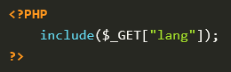
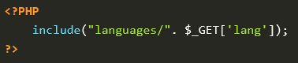
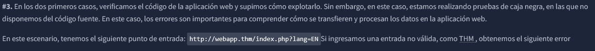
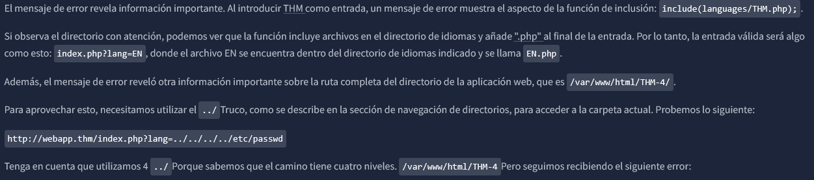
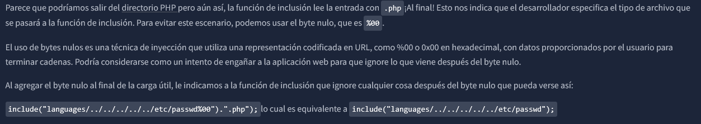
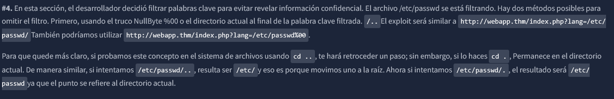
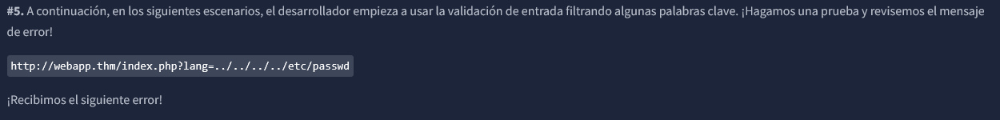
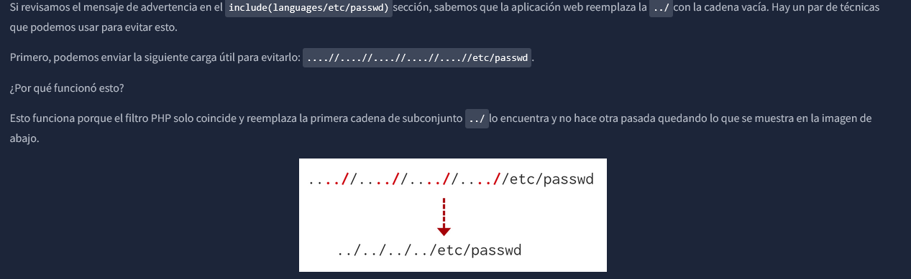

Local File Inclusion [LFI]
Los ataques LFI contra aplicaciones web suelen deberse a la falta de conocimientos de seguridad de los desarrolladores. Con PHP, el uso de funciones como include, require, include_once, require_once, suele contribuir a la vulnerabilidad de las aplicaciones web.
Cualquier lenguaje que pueda leer o incluir archivos y permita que el usuario influya en la ruta es vulnerable a LFI
Por ejemplo:
Escenarios de LFI:
#1 /etc/passwd
#2 ../../../../etc/passwd
#3 ../../../../etc/passwd%00 en la URL
#4 /etc/passwd%00 en la barra de busqueda
#5 ....//....//....//....//etc/passwd
#6 THM-profile../../../../../etc/passwd
#7 parameter=php://filter/convert.base64-encode/resource=website
#8 parameter=file:///etc/passwd
********************************************************************************************************************************************************************************
#1. Supongamos que la aplicación web ofrece dos idiomas y el usuario puede elegir entre EN y ES

La llamada se puede realizar enviando la siguiente solicitud HTTP: http://webapp.thm/index.php?lang=en.php para cargar la página en inglés o http://webapp.thm/index.php?lang=es.php para cargar la página espanol, donde los archivos en.php y es.php existen en el mismo directorio.
En teoría, podemos acceder y mostrar cualquier archivo legible en el servidor desde el código anterior si no hay validación de entrada. Supongamos que queremos leer el archivo /etc/passwd, que contiene información confidencial sobre los usuarios del sistema operativo Linux, podemos intentar lo siguiente: http://webapp.thm/index.php?lang=/etc/passwd
********************************************************************************************************************************************************************************
#2. A continuación, en el siguiente código, el desarrollador decidió especificar el directorio dentro de la función.

En el código anterior, el desarrollador decidió usar la función include para llamar a las paginas PHP en el directorio languages, solo a través del parametro lang.
Si no hay validación de entrada, el atacante puede manipular la URL reemplazando la entrada del idioma con otros archivos sensibles al sistema operativo, como /etc/passwd
Nuevamente, la carga útil es similar a la Path Traversal, pero la función include permite incluir cualquier archivo llamado en la página actual. El exploit se describe a continuación:
http://webapp.index.php?lang=../../../../etc/passwd
Porque:
include() con entrada del usuarioPath traversal es el método,
LFI es la vulnerabilidad.
En un reporte técnico pondrías algo como:
Local File Inclusion (LFI)
La vulnerabilidad permite incluir archivos locales arbitrarios mediante rutas relativas (../../) y rutas absolutas (/etc/passwd).
📌 Un solo hallazgo, múltiples vectores de explotación.
********************************************************************************************************************************************************************************
#3.

Warning: include(languajes/../../../../../etc/passwd.php): failed to open stream: No such file or directory in /var/www/html/THM-4/index.php on line 12


Nota: el truco %00 está corregido y no funciona con PHP 5.3.4 y superior.
********************************************************************************************************************************************************************************

********************************************************************************************************************************************************************************

Warning: include(languajes/etc/passwd.php): failed to open stream: No such file or directory in /var/www/html/THM-5/index.php on line 15

********************************************************************************************************************************************************************************